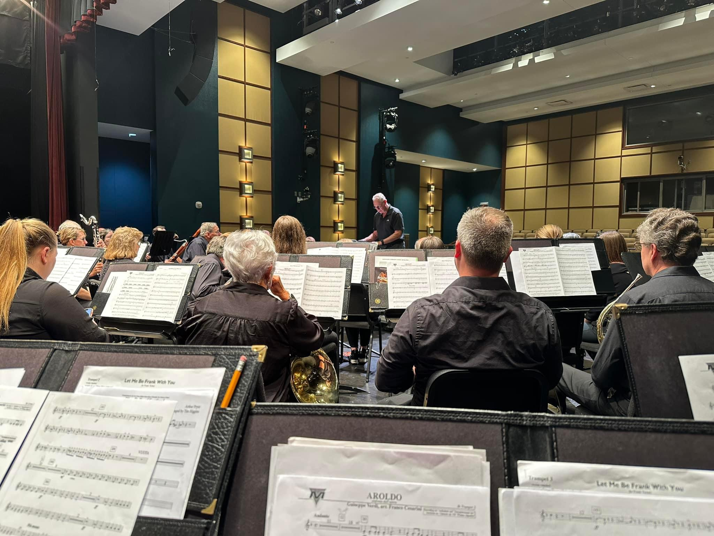

Join ACB!
The Anderson Community band is in session September through June. Rehearsals are on Monday evenings from 7-9pm at Nagel Middle School in Cincinnati, OH.
Current Openings:
- Alto Saxophone
- Bassoon (2)
- Clarinet
- Euphonium
- Tenor Saxophone
If you would like to join ACB or be added to the wait list, please review our Concert Series Calendar and Programs to learn more about the ACB. In order to be considered for one of the ACB open chairs, please complete the ACB application form and send to John Fecker via the contact information on the left navigation menu.
